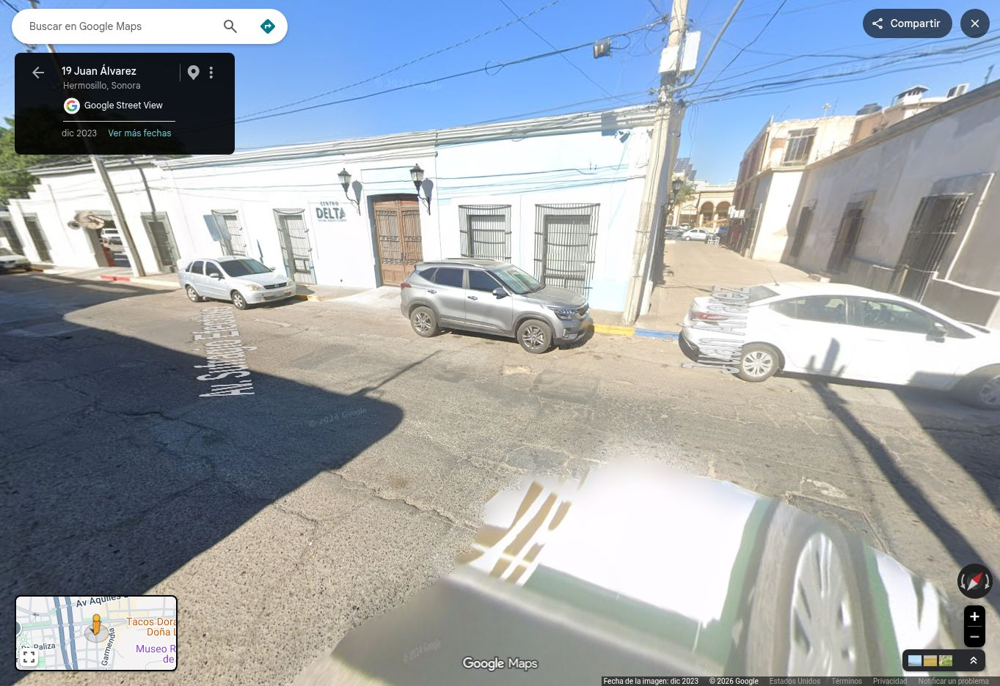
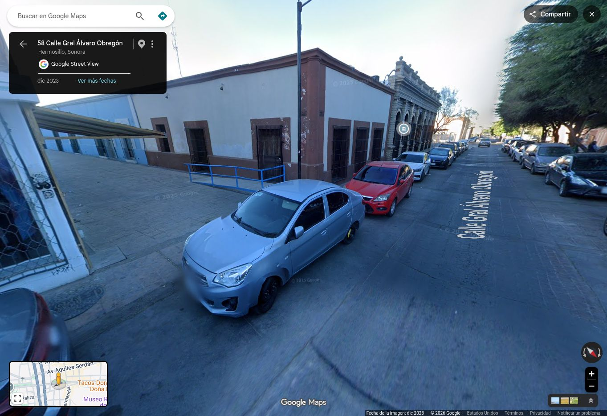
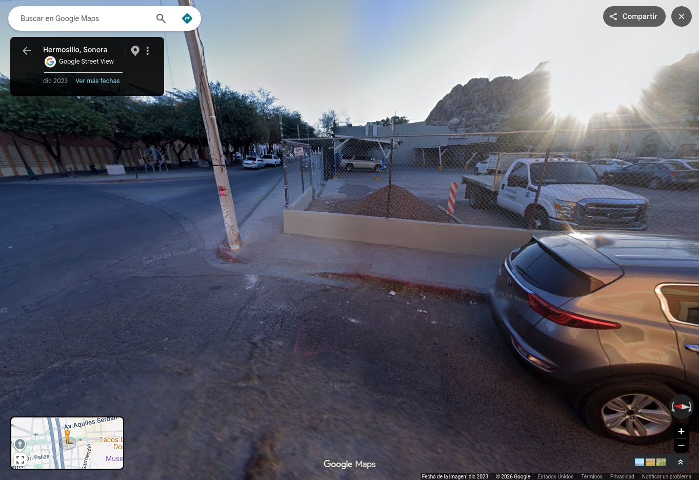
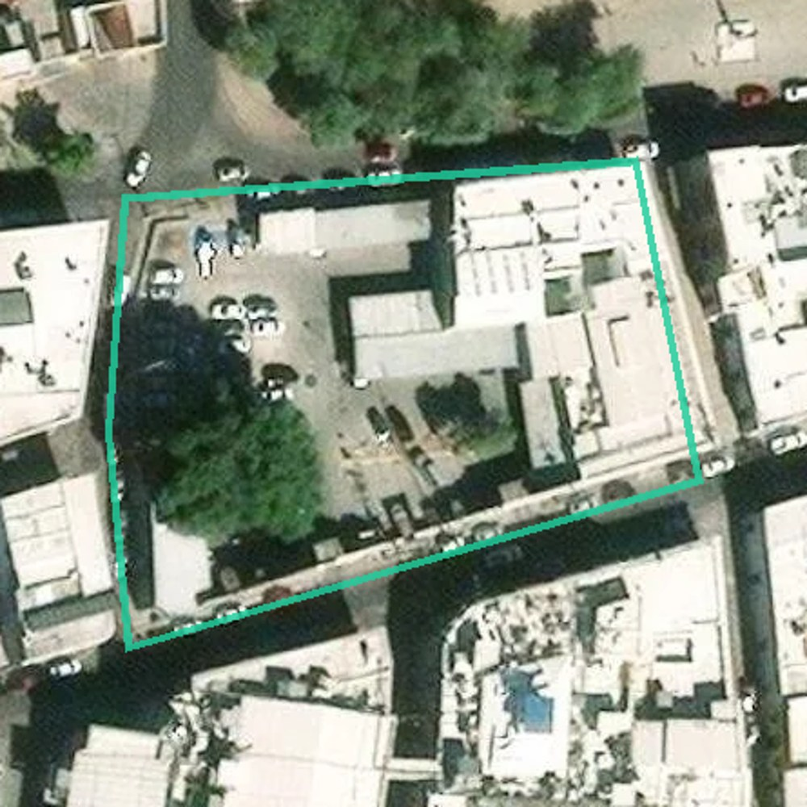
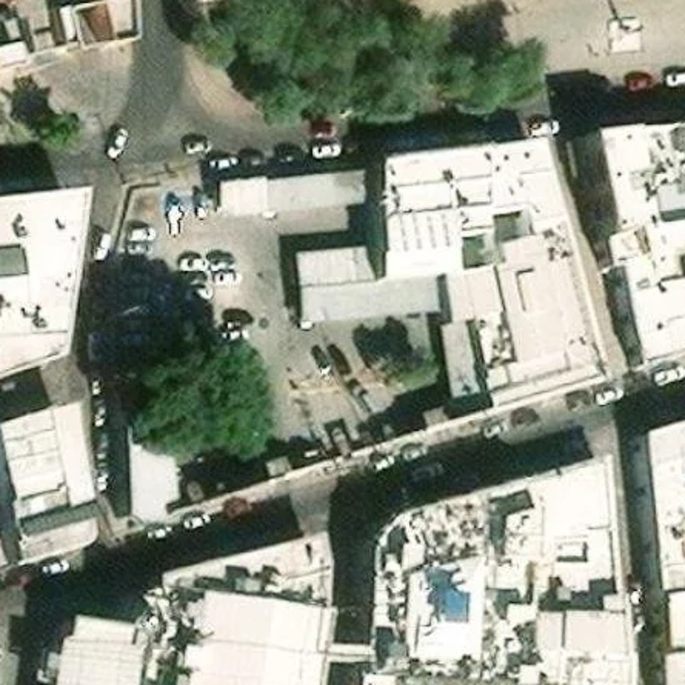
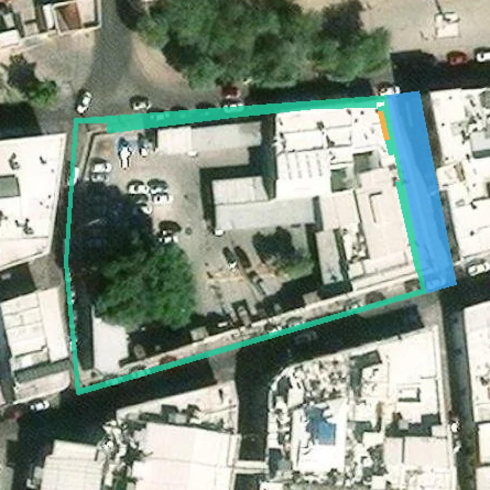
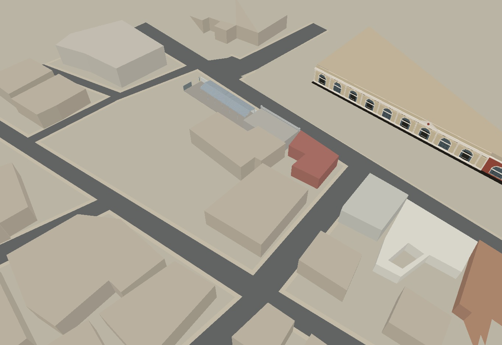
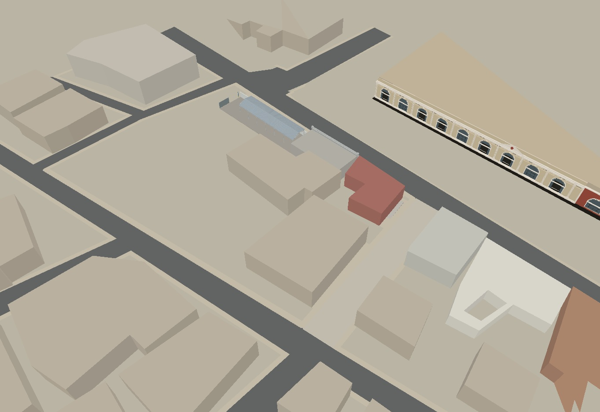
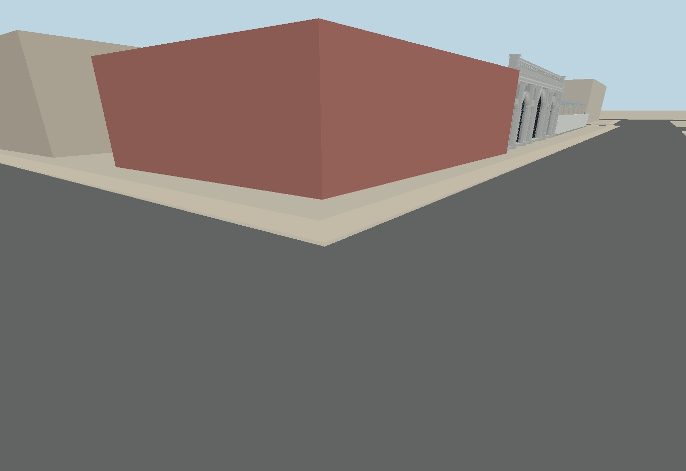
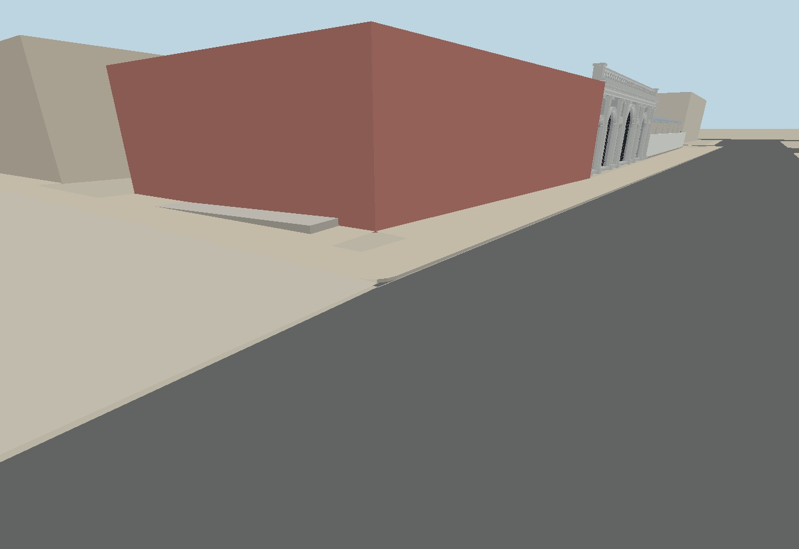

🟢 Cierre visual del punto 2. Banquetas de los cuatro frentes revisadas; Juan Álvarez conectado como corredor peatonal, rampa visible junto a C2-01 y guarniciones con caras verticales. Edificios y estacionamiento conservados.



Verde: banqueta. Azul: corredor peatonal de Juan Álvarez. Naranja: rampa documentada. La planta utiliza la geometría del modelo; no modifica la fotografía.




Triángulos reales del modelo, renderizados con profundidad desde cámaras idénticas. El color y las cotas son aproximados; no es una fotografía ni prueba de recorrido WebGL.



Referencias Street View de diciembre de 2023, con atribución preservada. Anchuras, radios y alturas son estimaciones; los bordes ocultos no certifican presencia o ausencia de rebajes. No se añaden rampas sin respaldo visual.
🟢 1. Planta y calle · 🟢 2. Banquetas y esquinas · 🔴 3. Edificios y volúmenes · 🔴 4. Fachadas y acabados · 🔴 5. Equipamiento y cierre.
Siguiente: punto 3 de C08.